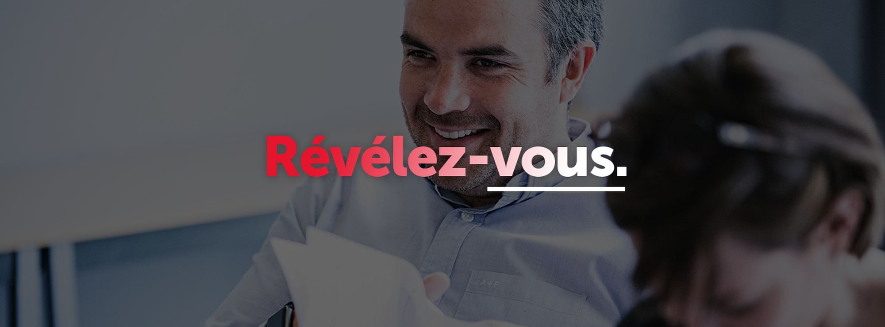
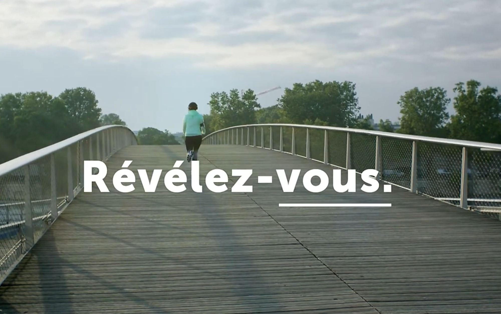

Pour Sciences Po Executive Education, l'enjeu n'est pas de séduire des étudiants. C'est de parler à des profils déjà installés — pour qui évoluer n'est plus une évidence, mais une décision.
Lead stratégie & création, je trouve leur couleur dans un insight simple : à mi-carrière, on ne cherche pas une formation. On cherche une bascule.
La signature, « Révélez-vous », devient l'axe de tout. Une plateforme qui transforme une offre académique en invitation à se dépasser : film, podcasts, activation digitale, déclinaisons programmes — déployée sur un an.
Le système se décline ensuite sur le site, les supports print, les programmes courts et les pages d'admission.

